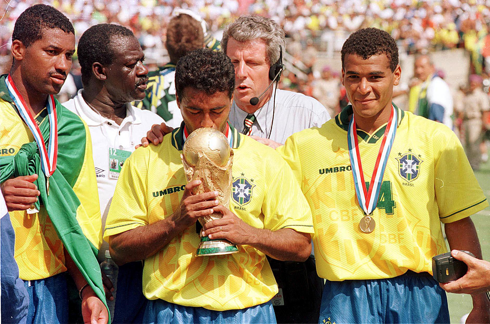

A Copa do Mundo de 1994, realizada nos Estados Unidos, marcou o fim de um jejum de 24 anos e consagrou o Brasil como tetracampeão mundial, reafirmando sua tradição e grandeza no cenário do futebol internacional. Diferente das conquistas anteriores, que foram marcadas pelo brilho ofensivo e pela criatividade, o título de 1994 veio com uma equipe sólida, disciplinada e extremamente eficiente, sob o comando do técnico Carlos Alberto Parreira.
A seleção brasileira adotou um estilo mais pragmático, com forte marcação, organização tática e aproveitamento das oportunidades de ataque. No centro desse esquema estava a dupla de ataque formada por Romário e Bebeto, dois dos maiores destaques da campanha. Romário, com sua agilidade, precisão e faro de gol, foi o grande nome da Copa, marcando cinco gols e sendo decisivo em momentos cruciais. Bebeto, com sua habilidade e inteligência, também foi fundamental, especialmente nas fases eliminatórias, e protagonizou momentos marcantes, como a comemoração do "embala neném" em homenagem ao nascimento de seu filho.
O meio-campo contava com jogadores importantes como Dunga, o capitão, símbolo da raça e da liderança daquela geração. Ele era o elo entre a defesa e o ataque e se destacou pelo seu espírito de luta e responsabilidade tática. Ao seu lado, Mazinho e Zinho completavam o setor, garantindo equilíbrio ao time. Na defesa, Aldair, Márcio Santos e o goleiro Taffarel foram figuras decisivas — este último brilhou especialmente na final.
A grande final foi contra a Itália, no estádio Rose Bowl, na Califórnia, diante de mais de 90 mil torcedores. Após um empate sem gols no tempo normal e na prorrogação, o título foi decidido nos pênaltis — pela primeira vez na história das Copas. O Brasil converteu três cobranças, e a Itália desperdiçou outras três, incluindo a última, chutada por Roberto Baggio por cima do gol. Coube a Taffarel brilhar com defesas importantes, e ao Brasil comemorar um título histórico.
O tetracampeonato de 1994 simbolizou uma nova era no futebol brasileiro, provando que era possível aliar talento à disciplina tática para conquistar o mundo. Com Romário como grande herói e uma equipe que soube jogar com o coração e a cabeça, o Brasil escreveu mais um capítulo glorioso em sua trajetória nas Copas do Mundo.
